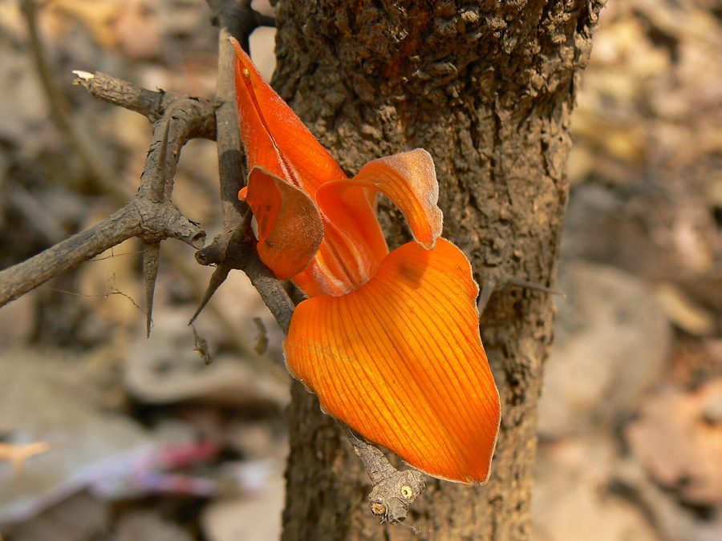

पलाशPalash
Butea monosperma · Fabaceae · FLR-0037

- Scientific name
- Butea monosperma (Lam.) Kuntze
- Family
- Fabaceae
- Hindi
- पलाश
- Status here
- native
- IUCN
- LC
When to look कब देखें
Present all year.
पलाश / Palash
Butea monosperma (Lam.) Kuntze — Fabaceae
पलाश — हमारे शुष्क मैदानी इलाकों और बंजर भूमि का एक मध्यम आकार का, अत्यंत सुंदर पर्णपाती वृक्ष है जिसे 'जंगल की आग' (Flame of the Forest) भी कहा जाता है। वसंत ऋतु (फरवरी-अप्रैल) में जब यह पेड़ पूरी तरह से पत्ती रहित हो जाता है, तब इसकी शाखाओं पर चमकीले नारंगी-लाल रंग के फूलों का सैलाब आ जाता है, जिससे पूरा परिदृश्य ऐसा प्रतीत होता है मानो आग लगी हो। इसके फूल तोते की चोंच जैसे होते हैं, जो कई प्रकार के पक्षियों को परागण के लिए आकर्षित करते हैं। यह एक फलीदार (nitrogen-fixing) वृक्ष है जो बंजर मिट्टी को उपजाऊ बनाने में मदद करता है और इसके पत्ते लाख के कीड़ों (Lac insects) के पालन के लिए मुख्य भोजन का काम करते हैं।
Quick Identification त्वरित पहचान
| Feature | Description |
|---|---|
| Size & Shape | Medium-sized tree (10–15 m tall) with a crooked, irregular trunk and twisted branches |
| Bark | Rough, fibrous, ash-colored or dark brown bark, exuding a bright red gum when cut |
| Leaves | Distinctive large trifoliate leaves; leaflets are broad, leathery, and rounded, often described as 'three leaves of Dhak' |
| Flowers | Large, densely clustered, bright orange-red or salmon-colored flowers shaped like a parrot's beak |
| Fruit & Seeds | Flat, yellowish-brown, single-seeded woody pods (10–15 cm long) covered with fine silvery hairs |
Field tip: Look for large, leathery leaves grouped in sets of three (trifoliate) with a rough, fuzzy texture. In spring (February–April), the leafless canopy explodes into a brilliant display of orange-red parrot-beak shaped flowers.
Morphology आकारिकी
Biometrics (typical measurements in the Gangetic plain):
| Feature | Measurement |
|---|---|
| Tree height | 10–15 m |
| Leaf length | 10–20 cm (leaflets) |
| Leaf width | 8–15 cm (leaflets) |
| Flower diameter | 4–6 cm |
| Fruit dimensions | 10–15 cm long, 3–5 cm wide |
Habit: Medium-sized deciduous tree with a crooked trunk and irregular, twisted branches. Canopy is open and irregular.
Bark: Rough, dark grey or ash-colored, deeply fissured. When cut, it exudes a red, sticky resin known as 'Bengal Kino' or Kamarkas.
Leaves: Alternate, trifoliate (three leaflets). Petiole is 8–15 cm long. Leaflets are broadly obovate, 10–20 cm long and 8–15 cm wide, thick and leathery. The terminal leaflet is slightly larger than the two lateral ones.
Flowers: Densely crowded on leafless branches. The flowers are 4–6 cm long, bright orange-red or salmon-colored. The petals are covered with fine silky hairs that shimmer in sunlight. The shape resembles a parrot's beak or a flame, with a dark velvety calyx.
Fruit & Seeds: The fruit is a flat, leguminous pod, 10–15 cm long and 3–5 cm wide, pale yellowish-green turning brown when ripe. It contains a single flat, kidney-shaped seed at the apex of the pod.
Ecological Role पारिस्थितिक भूमिका
Nitrogen-fixing keystone. As a member of the Fabaceae family, Palash plays a key role in soil enrichment.
- Soil fertilizer: Its roots host symbiotic Rhizobium bacteria that fix atmospheric nitrogen, improving the fertility of degraded village pastures and sodic (usar) soils.
- Exclusive host plant: It is the primary host tree for the Lac insect (Kerria lacca), which feeds on the sap of young twigs, supporting a rich food web of parasitic and predatory insects.
- Avian refueling station: The orange flowers are visited by bulbuls, mynas, babblers, and sunbirds, which feed on the nectar and act as key pollinators while using the strong branches as lookouts.
Life Cycle / Phenology जीवन चक्र
- Germination: Seedlings emerge easily from single-seeded pods during the early monsoon.
- Growth: Slow to moderate growth rate, highly resistant to drought and forest fires.
- Leaf shedding: Leaves fall in January–February, leaving the tree completely bare.
- Flowering: February to April, coinciding with the festival of Holi and spring peak.
- Fruiting: Flat pods develop in April and mature by June, dispersed by wind.
Host Plants or Prey आहार
Prey / Beneficiaries:
- Insects: Exclusively hosts the Lac insect (Kerria lacca). Pollinated by large bees and sunbirds.
- Birds: Nectar consumed by mynas, bulbuls, and parakeets.
- Soil: Root nodules enrich soil nitrogen levels.
Predators / Natural Enemies शत्रु
- Parasites: Lac insect infestations can weaken young twigs if too dense.
- Mammals: Goats and cattle feed on young seedlings, though mature leaves are avoided due to their tough texture.
- Fungi: Powdery mildew affects leaves in high-humidity seasons.
Agricultural / Human Relevance कृषि और मानव संबंध
Traditional and Ethnobotanical Use
Palash is deeply woven into the agrarian life and cultural traditions of eastern Uttar Pradesh:
- Specific medicinal preparations:
- Intestinal Worms: The flat seeds are dried, ground into a powder, and mixed with honey or lemon juice to treat intestinal worm infestations in children.
- Skin Inflammations: A decoction of the bright orange flowers is used as a soothing wash, or a paste of the flowers is applied topically to relieve skin heat, rashes, and sunburn.
- Diarrhoea: The red resin (known as Kamarkas or Bengal Kino) is dissolved in warm water and administered to treat acute diarrhoea.
- Religious or cultural significance in eastern UP: The flowers (known as Tesu or Dhak) are traditionally boiled in water to prepare a natural yellow-orange dye for Holi, representing the arrival of spring (Basant). The wood is used in sacred Havan (fire sacrifice) rituals.
- Traditional ecological or seasonal knowledge: The saying "ढाक के तीन पात" (three leaves of Dhak) refers to the consistent, unchanged state of the tree's foliage, reflecting simplicity. The fiery orange canopy is used by local communities to mark the end of winter and the start of spring farming activities.
Expected Locally स्थानीय रूप से अपेक्षित
Not a field record. Written from published accounts for eastern Uttar Pradesh. No confirmed local sighting yet — if you have seen it, that is what the atlas needs.
अभी तक स्थानीय पुष्टि नहीं। यह विवरण प्रकाशित स्रोतों से है, किसी अवलोकन से नहीं।
Commonly found in the usar (alkaline) soils, pasture lands, and canal banks of Basti and Ayodhya. The crooked, twisted trunks are a characteristic feature of the degraded village common lands (gauchar). During March, the bright orange patches of flowering Palash trees stand out dramatically against the dusty, dry landscape of eastern UP, signaling the end of the harvest season.
Distribution वितरण
Global range: Native to the tropical and subtropical regions of the Indian subcontinent and Southeast Asia, including Pakistan, India, Nepal, Sri Lanka, Bangladesh, Myanmar, Thailand, Laos, and Cambodia.
In India: Widespread in dry deciduous forests, grasslands, and plains country-wide.
In Uttar Pradesh: Abundant resident tree in central and eastern UP districts, especially in saline or degraded soils.
In Basti district / eastern UP: Highly common in village pastures and open woodlands.
Research Questions शोध प्रश्न
Anyone can investigate these | कोई भी इन प्रश्नों की जाँच कर सकता है
- How does the presence of Palash trees affect the growth of grasses underneath in degraded pastures? — Compare grass biomass under the canopy vs. open ground.
- What is the density of Lac insect colonization on Palash trees in your village? — Survey branches to map active lac crusts.
- Which bird species are the most effective pollinators of the parrot-beak shaped flowers? / पलाश के तोते की चोंच जैसे फूलों के सबसे प्रभावी परागणकर्ता कौन से पक्षी हैं? — Record bird visits and behavior at flowers.
- How do local communities prepare natural dyes from Tesu flowers for Holi in your area? — Interview village elders to document traditional recipes.
- What is the survival rate of Palash seeds during dry summer heat before the monsoon? — Monitor seed viability in field conditions.
Similar Species मिलती-जुलती प्रजातियाँ
| Species | How to tell apart | हिंदी |
|---|---|---|
| Climbing Palash (Butea superba) | A massive woody climber (liana) rather than a tree; flowers are similar orange-red; found in dense forests | बेल पलाश — लता रूप |
| Semal (Bombax ceiba) | Much taller tree; trunk covered with sharp prickles; leaves are palmately compound (not trifoliate) | सेमल — काँटेदार तना, पांच पत्ते |
| native Babool (Vachellia nilotica) | Small bipinnate leaves; bright yellow flower balls; has long white thorns | बबूल — कांटेदार, छोटे पत्ते |
Field rule: Crooked trunk, large leathery trifoliate leaves (three leaflets), and masses of bright orange-red parrot-beak shaped flowers on leafless branches in spring identify the Palash tree.
Taxonomy & Classification वर्गीकरण
Original description. Jean-Baptiste Lamarck described this species as Erythrina monosperma in 1786 in his work Encyclopédie Méthodique, Botanique (Vol. 2, p. 391). It was transferred to the genus Butea by Carl Ernst Otto Kuntze in 1891 in his work Revisio Generum Plantarum (Vol. 1, p. 202). The genus Butea is named after John Stuart, 3rd Earl of Bute, a patron of botany, and monosperma is Greek for "single-seeded", referring to the single seed at the tip of the pod.
Subspecies. Monotypic.
Family and order placement. Placed in the order Fabales, family Fabaceae (pea family), subfamily Faboideae.
Phylogenetic notes. Butea monosperma belongs to the tribe Phaseoleae, closely related to climbing beans and kudzu vines.
IUCN status rationale. Evaluated as Least Concern (LC) due to its wide distribution, high abundance, and resilience to harsh dry conditions and grazing pressure.
Photo Gallery फोटो गैलरी
References संदर्भ
- Lamarck, J.-B. (1786). Encyclopédie Méthodique, Botanique. Panckoucke, Paris, Vol. 2, p. 391.
- Kuntze, C.E.O. (1891). Revisio Generum Plantarum. Vol. 1, p. 202. [generic transfer]
- Brandis, D. (1906). Indian Trees. Archibald Constable & Co., London.
- Sahni, K.C. (1998). The Book of Indian Trees. Oxford University Press, New Delhi.
- IUCN Red List (2024). Butea monosperma. Ver. 2024.
- GBIF Occurrence Data — Butea monosperma, Uttar Pradesh (2010–2025).
Source file: species/flora/trees/palash.md